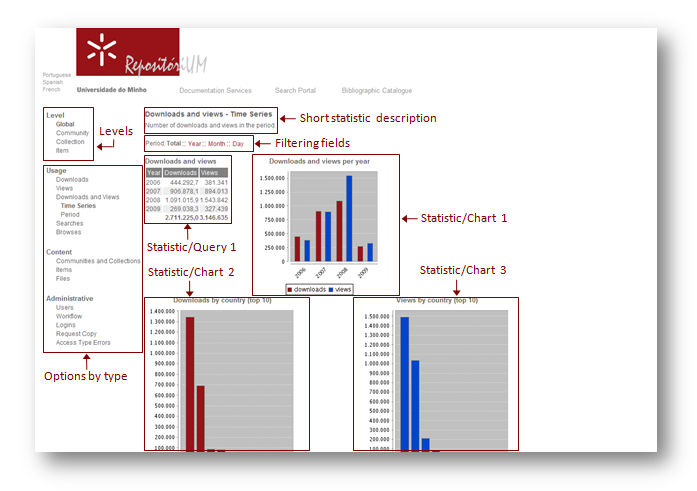

email: repositorium@sdum.uminho.pt
This User Guide describes some aspects of the final usage of the Statistics System with some examples.
Please note that in this particular User Guide we use several examples implemented in RepositóriUM, consequently they may not apply to other DSpace environments.
The Web interface is highly flexible, allowing configuration – according to a base structure – the information diplay in the user interface. The structure of the system is based upon the organization of information in two dimensions: type of information (Usage, Content, Administrative) and aggregation level (Repository, Community, Collection, Item).
Here is a short description of the aggregation levels contents:
Repository - global usage, content and administrative statistics.
Community - community usage, content and administrative statistics.
Collection - collection usage, content and administrative statistics.
Item - item usage and administrative statistics.
Besides these four aggregation levels, the Add-on allows to execute temporal data aggregations (month, year, global) to improve the response time of the most “heavy” statistics (for instance, downloads at Global/Repository level). Those aggregations are pre-processed in batch mode.
Very Important Notes:
In this statistics Add-on it's considered a download every time the file associated to an item register is opened/saved (for registers with a single file). In the case of items with more than one file associated, the number of downloads is equal to the number of open/save events divided by the number of files associated.
A item view is considered every time someone accesses and visualizes the metadata of an item register.
The following printscreen illustrates an example of the Statistics System Web interface. On the left, the navigation menu with the existing four aggregation levels (Global, Community, Collection, Item) and the various statistics options by type of information (Usage, Content and Administrative). Please note, as it's configurable, the hierarchy of the different statistics can be different in other DSpace environments.
On the center/right side of the Web interface, the Statistics System definition model allows more than one page, implementing filtering fields (in a kind of tab separator, useful for similar statistics, that distinguish only by details like filter criteria, aggregation period, etc.).
On this center/right area, accordingly to the type of statistic you selected, you can see the information made available in form of tables (eg. Statistic/Query 1), charts (Statistic/Chart 1, 2, 3), etc.
This example is only the one of the stylesheets we have defined. Other stylesheets can be designed and completely change the layout. This a principle for the entire system.

Each repository may define user access policies at the two organizational dimensions : information types and aggregation level. It will be possible to have all the statistics available for all the users or to restrict the access to some or all the statistics.
In the case of repositories with access restrictions to some, or all the statistics, you will need to login in the system in order to be able to access all the statistics available to the communities/groups you belong and accordingly to your permission access level.
After logging in, the access to different levels of statistics in RepositóriUM for example can be done by the following ways:
If you find any difficulty using the statistics package or if you want to share your feedback, your comments will be appreciated! Feel free to contact us using the e-mail: repositorium@sdum.uminho.pt
For more information about the Statistics Add-on, please refer to the: Statistics System Documentation
|
|
URL: https://repositorium.sdum.uminho.pt email: repositorium@sdum.uminho.pt |